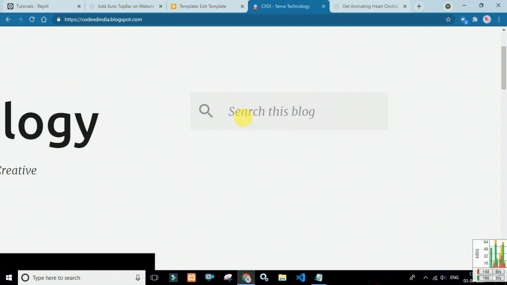

Get Animating Heart Onclick ft. heartclick.js

<script src="https://tutorials.sh20raj.repl.co/get-heart-onclick-heartclick.js/heartclick.js"></script>
Add a Stylish onclick animation on Your Website or Blog Using heartclick.js
Just Copy Paste the CDN Just before </body> Tag.(Ending of the WebPage...)
